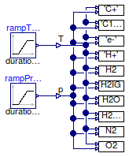

Table of Contents
- User's Guide
- Conditions
- Assemblies
- Regions
- Subregions
- Connectors
- Characteristics
- Units
- Quantities
- BaseClasses
Download
- Latest: FCSys-2.0.zip (**Please check back soon or contact kdavies4 at gmail.com.)

| Name | Description |
|---|---|
| Correlations | Evaluate the material properties over varying temperature and pressure |

| Type | Name | Description |
|---|---|---|
| output RealOutputInternal | T | Temperature [l2.m/(N.T2)] |
| output RealOutputInternal | p | Pressure [m/(l.T2)] |
model Correlations "Evaluate the material properties over varying temperature and pressure" extends Modelica.Icons.Example; // Data import 'DataC+' = FCSys.Characteristics.'C+'.Graphite; import 'DataC19HF37O5S-' = FCSys.Characteristics.'C19HF37O5S-'.Ionomer; import 'Datae-' = FCSys.Characteristics.'e-'.Graphite; import DataH2 = FCSys.Characteristics.H2.Gas; protected package DataH2IG = FCSys.Characteristics.H2.Gas (b_v=[1], specVolPow={-1,0}) "H2 as ideal gas"; import DataH2O = FCSys.Characteristics.H2O.Gas; import DataH2OLiquid = FCSys.Characteristics.H2O.Liquid; import 'DataH+' = FCSys.Characteristics.'H+'.Ionomer; import DataN2 = FCSys.Characteristics.N2.Gas; import DataO2 = FCSys.Characteristics.O2.Gas; // Conditionspublic FCSys.Connectors.RealOutputInternal T(unit="l2.m/(N.T2)",displayUnit="K") "Temperature"; FCSys.Connectors.RealOutputInternal p(unit="m/(l.T2)") "Pressure"; // Results // ------- // Isobaric specific heat capacity output Q.CapacityThermalSpecific 'c_p_C+'='DataC+'.c_p(T, p); output Q.CapacityThermalSpecific 'c_p_C19HF37O5S-'='DataC19HF37O5S-'.c_p(T, p); output Q.CapacityThermalSpecific 'c_p_e-'='Datae-'.c_p(T, p); output Q.CapacityThermalSpecific 'c_p_H+'='DataH+'.c_p(T, p); output Q.CapacityThermalSpecific c_p_H2=DataH2.c_p(T, p); output Q.CapacityThermalSpecific c_p_H2O=DataH2O.c_p(T, p); output Q.CapacityThermalSpecific c_p_H2O_liquid=DataH2OLiquid.c_p(T, p); output Q.CapacityThermalSpecific c_p_N2=DataN2.c_p(T, p); output Q.CapacityThermalSpecific c_p_O2=DataO2.c_p(T, p); // // Isochoric specific heat capacity output Q.CapacityThermalSpecific 'c_V_C+'='DataC+'.c_V(T, p); output Q.CapacityThermalSpecific 'c_V_C19HF37O5S-'='DataC19HF37O5S-'.c_V(T, p); output Q.CapacityThermalSpecific 'c_V_e-'='Datae-'.c_V(T, p); output Q.CapacityThermalSpecific 'c_V_H+'='DataH+'.c_V(T, p); output Q.CapacityThermalSpecific c_V_H2=DataH2.c_V(T, p); output Q.CapacityThermalSpecific c_V_H2O=DataH2O.c_V(T, p); output Q.CapacityThermalSpecific c_V_H2O_liquid=DataH2OLiquid.c_V(T, p); output Q.CapacityThermalSpecific c_V_N2=DataN2.c_V(T, p); output Q.CapacityThermalSpecific c_V_O2=DataO2.c_V(T, p); // // Gibbs potential output Q.Potential 'g_C+'='DataC+'.g(T, p); output Q.Potential 'g_C19HF37O5S-'='DataC19HF37O5S-'.g(T, p); output Q.Potential 'g_e-'='Datae-'.g(T, p); output Q.Potential 'g_H+'='DataH+'.g(T, p); output Q.Potential g_H2=DataH2.g(T, p); output Q.Potential g_H2O=DataH2O.g(T, p); output Q.Potential g_H2O_liquid=DataH2OLiquid.g(T, p); output Q.Potential g_N2=DataN2.g(T, p); output Q.Potential g_O2=DataO2.g(T, p); // // Specific enthalpy output Q.Potential 'h_C+'='DataC+'.h(T); output Q.Potential 'h_C19HF37O5S-'='DataC19HF37O5S-'.h(T); output Q.Potential 'h_e-'='Datae-'.h(T); output Q.Potential 'h_H+'=FCSys.Characteristics.'H+'.Ionomer.h(T); output Q.Potential h_H2=DataH2.h(T); output Q.Potential h_H2O=DataH2O.h(T); output Q.Potential h_H2O_liquid=DataH2OLiquid.h(T); output Q.Potential h_N2=DataN2.h(T); output Q.Potential h_O2=DataO2.h(T); // // Pressure (indirectly via v_Tp()) output Q.PressureAbsolute 'p_C+'='DataC+'.p_Tv(T, v_C) if 'DataC+'.isCompressible; output Q.PressureAbsolute 'p_C19HF37O5S-'='DataC19HF37O5S-'.p_Tv(T, 'v_C19HF37O5S-') if 'DataC19HF37O5S-'.isCompressible; output Q.PressureAbsolute 'p_e-'='Datae-'.p_Tv(T, 'v_e-') if 'Datae-'.isCompressible; output Q.PressureAbsolute 'p_H+'='DataH+'.p_Tv(T, 'v_H+') if 'DataH+'.isCompressible; output Q.PressureAbsolute p_H2=DataH2.p_Tv(T, v_H2) if DataH2.isCompressible; output Q.PressureAbsolute p_H2O=DataH2O.p_Tv(T, v_H2O) if DataH2O.isCompressible; // Note that p_H2O diverges from p in Dymola 7.4 due to the large // coefficients in the second row of DataH2O.b_v, which cause numerical // errors. output Q.PressureAbsolute p_H2O_liquid=DataH2OLiquid.p_Tv(T, v_H2O_liquid) if DataH2OLiquid.isCompressible; output Q.PressureAbsolute p_N2=DataN2.p_Tv(T, v_N2) if DataN2.isCompressible; output Q.PressureAbsolute p_O2=DataO2.p_Tv(T, v_O2) if DataO2.isCompressible; output Q.PressureAbsolute p_IG=DataH2IG.p_Tv(T, v_IG) if DataH2IG.isCompressible "Pressure of ideal gas"; // // Specific entropy output Q.Number 's_C+'='DataC+'.s(T, p); output Q.Number 's_C19HF37O5S-'='DataC19HF37O5S-'.s(T, p); output Q.Number 's_e-'='Datae-'.s(T, p); output Q.Number 's_H+'=FCSys.Characteristics.'H+'.Ionomer.s(T, p); output Q.Number s_H2=DataH2.s(T, p); output Q.Number s_H2O=DataH2O.s(T, p); output Q.Number s_H2O_liquid=DataH2OLiquid.s(T, p); output Q.Number s_N2=DataN2.s(T, p); output Q.Number s_O2=DataO2.s(T, p); // // Specific volume output Q.VolumeSpecificAbsolute 'v_C+'='DataC+'.v_Tp(T, p); output Q.VolumeSpecificAbsolute 'v_C19HF37O5S-'='DataC19HF37O5S-'.v_Tp(T, p); output Q.VolumeSpecificAbsolute 'v_e-'='Datae-'.v_Tp(T, p); output Q.VolumeSpecificAbsolute 'v_H+'='DataH+'.v_Tp(T, p); output Q.VolumeSpecificAbsolute v_H2=DataH2.v_Tp(T, p); output Q.VolumeSpecificAbsolute v_H2O=DataH2O.v_Tp(T, p); output Q.VolumeSpecificAbsolute v_H2O_liquid=DataH2OLiquid.v_Tp(T, p); output Q.VolumeSpecificAbsolute v_N2=DataN2.v_Tp(T, p); output Q.VolumeSpecificAbsolute v_O2=DataO2.v_Tp(T, p); output Q.VolumeSpecificAbsolute v_IG=DataH2IG.v_Tp(T, p) "Specific volume of ideal gas";protected Modelica.Blocks.Sources.Clock clock; Modelica.Blocks.Sources.Constant temperatureOffset(k=273.15*U.K); Modelica.Blocks.Sources.Constant pressureOffset(k=U.atm); Modelica.Blocks.Math.Gain temperatureGain(k=200*U.K); Modelica.Blocks.Math.Gain pressureGain(k=0*U.bar); Modelica.Blocks.Math.Add addTemperature; Modelica.Blocks.Math.Add addPressure; equationconnect(clock.y, temperatureGain.u); connect(clock.y, pressureGain.u); connect(temperatureOffset.y, addTemperature.u1); connect(pressureOffset.y, addPressure.u2); connect(temperatureGain.y, addTemperature.u2); connect(pressureGain.y, addPressure.u1); connect(addTemperature.y, T); connect(addPressure.y, p); end Correlations;